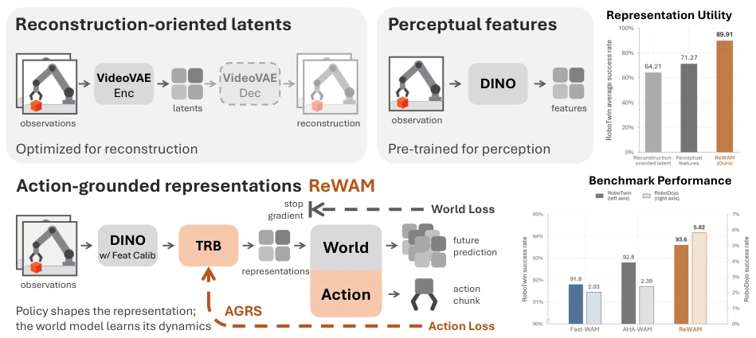
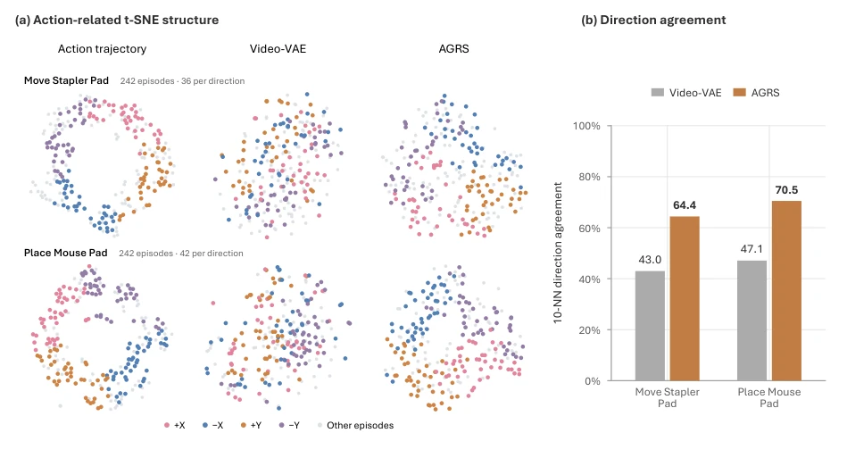
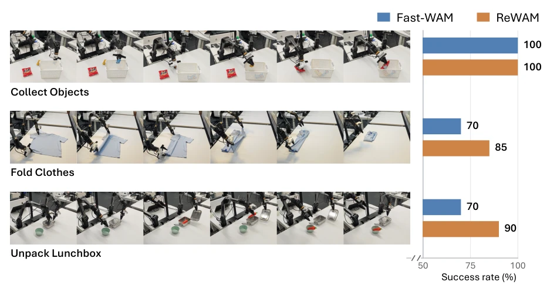

This paper is simply a slap in the face to the world model community, directly questioning "reconstruction is justice". The authors found that the Video-VAE latent space optimized for pixel-level reconstruction is actually a mere facade that looks good but is useless for robot control, while using DINO features directly is too coarse. The cleverness of ReWAM lies in not pursuing the generation of realistic future videos, but letting the action policy "shape" the representation space. Although no generative video pretraining was conducted, it managed to surpass Fast-WAM on RoboTwin 2.0, which is quite uplifting. However, it still falls short in open instruction following; it seems relying solely on action gradient shaping is not enough, and the generalization ability of visual semantics still needs to be supplemented by generative models. Overall, this is an excellent work of "removing falsehood to keep truth", reminding us not to over-compete in video generation and ignore the essence of control.
Existing World Action Models (WAMs) mostly rely on large-scale generative video pretraining to predict future observations through the latent space of Video-VAE [1, 3, 4]. But this brings two problems: first, the latent space is optimized for visual reconstruction, potentially retaining fine-grained appearance details irrelevant to control; second, reconstruction fidelity alone cannot guarantee control utility [8, 9]. The authors found through controlled comparison that without generative pretraining, raw DINO features perform better than Video-VAE, but using them directly for dynamics modeling yields poor results because frame-level features do not explicitly encode temporal changes. Therefore, the core question is: how to design a representation space that is suitable for dynamics prediction and serves control strategies? Existing methods either over-rely on reconstruction or ignore the calibration and temporal organization of perceptual features.
The overall process of ReWAM is jointly learning the action policy and world model prediction. Inputs include multi-view observations, proprioception, and language instructions, first extracting features through a frozen DINOv3 backbone. The core innovations lie in three modules: first is Feature Calibration, adapting DINO features to the diffusion modeling distribution through Multi-Layer Aggregation (MLA), normalization, and perceptual noise scheduling; second is the Temporal Representation Bottleneck (TRB), compressing frame-level features into compact world state tokens, stabilizing training through causal running normalization; the most critical Action-Grounded Representation Shaping (AGRS) mechanism adopts asymmetric gradient routing: prediction loss gradients from the world branch do not update TRB, only action loss gradients can backpropagate to TRB. This means the policy network decides what content the representation space encodes, while the world model only learns how this representation evolves. This division of labor avoids the world model distorting the representation for prediction accuracy, ensuring the representation space is friendly to action prediction. The model architecture adopts MoT, where the world and action branches share current state conditions but attention between future states and action tokens is blocked.

Figure 1: Overview of representations for world-action modeling. Top-left: Video-VAE latents are optimized for visual reconstruction. Top-right: Frozen DINO features inherit priors from perceptual pre- training. Bottom: ReWAM uses a Temporal Representation Bottleneck (TRB) to form compact world states from calibrated DINO features. Action-Grounded Representation Shaping (AGRS) trains the TRB through asymmetric routing of action-loss gradients, while the world model learns state transitions.

Figure 2: Action-related structure in representation variations. (a) Independent t-SNE projections of commanded end-effector trajectories, Video-VAE variations, and AGRS variations (left to right) for Move Stapler Pad (top) and Place Mouse Pad (bottom). Each task shows the same 242 transitions in all three projections; colors identify motion directions in balanced subsets, with the remaining transitions in gray. (b) Mean direction agreement among ten nearest neighbors in the original representation space. AGRS shows higher agreement than Video-VAE on both tasks.
Experiments were conducted on RoboTwin 2.0, RoboDojo simulation, and real dual-arm robots. On RoboTwin 2.0, ReWAM achieved a 93.6% success rate without generative pretraining, outperforming baselines like Fast-WAM. On RoboDojo, the average score was 9.42 without pretraining, improving to 12.29 after 600 hours of embodied pretraining. Ablation studies show that reconstruction fidelity alone (Video-VAE) is inferior to DINO features, and DINO requires calibration (+12.20% improvement). TRB is better than random projection, and AGRS performs better than allowing world loss gradient backpropagation (90.70% vs 79.40%). In real robot tasks, ReWAM improved success rates by 15-20 percentage points on complex tasks such as folding clothes. Analysis indicates that the AGRS representation space has a better clustering structure in action directions.

Figure 3: Real-robot task success. Task photos and success rates over 20 trials per task. ReWAM achieves 91.7% average success versus 80.0% for Fast-WAM. The horizontal axis starts at 50%.